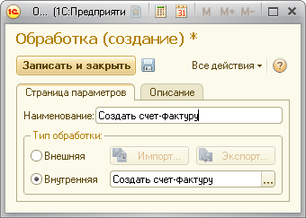
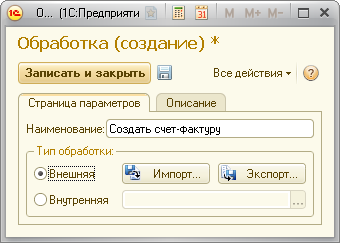

Все действия, которые будут выполнять Виртуальные пользователи в процессе тестирования, должны быть предварительно запрограммированы в виде Обработок.
Для создания и редактирования Обработок откройте список «Обработки». Обратите внимание, что вы можете использовать внутреннюю или внешнюю обработку, в зависимости от решаемой задачи.
Внутреннюю обработку удобно использовать в процессе отладки теста. При использовании внутренней обработки вы сможете легко устанавливать точки останова в ее тексте и отлаживать ее пошагово во время работы теста. При использовании внешней обработки эти действия будут затруднены.
С другой стороны при редактировании обработки вам придется каждый раз обновлять конфигурацию тестовой информационной базы, что может оказаться неудобным.
Для создания внутренней обработки следует подключиться к тестовой базе конфигуратором, после чего создать копию обработки «ТЦШаблонТестовойОбработки» и дать ей имя, соответствующее смыслу выполняемых действий.
ВАЖНО!!! Для создания новых обработок всегда используйте копию шаблонной обработки. Для нормальной работы с Тест-центром обработка должна соответствовать определенным требованиям, в частности содержать определенные реквизиты и функции с определенными именами.
После создания обработки открывайте ее средствами конфигуратора и приступайте к программированию обработки (см. Программирование обработки).
Для того чтобы внутренняя обработка могла быть использована Тест-центром, следует зарегистрировать ее в списке обработок.

Внешние обработки будут храниться в хранилище значений справочника «Обработки». При выполнении сценария виртуальные пользователи будут выгружать обработки из хранилища значений в каталог временных файлов и запускать их оттуда. Это может создать определенные трудности при отладке сценария во время тестирования.
Кроме того, при работе с внешними обработками следует всегда помнить, что обработка будет запускаться из хранилища значений, а значит для редактирования ее нужно оттуда получить (Кнопка «Экспорт»), а после редактирования туда сохранить (Кнопка «Импорт»).
С другой стороны такую обработку можно менять, не меняя конфигурацию, что в ряде случаев может оказаться удобнее.
Для создания внешней обработки следует нажать кнопку «Экспорт» в форме редактирования обработки. Если обработка новая, то она будет создана в указанном месте на диске на основании шаблона (аналогичного внутренней обработке «ТЦШаблонТестовойОбработки»). Если обработка была вами ранее отредактирована и сохранена в справочнике, то будет выгружена ее текущая версия.

ВАЖНО!!! При создании новых внешних обработок следует всегда использовать кнопку «Экспорт» в форме редактирования обработки. При этом обработка будет создана по шаблону, что является критически важным для ее правильной работы.
После создания внешней обработки открывайте ее средствами конфигуратора и приступайте к программированию обработки (см. Программирование обработки).
ВАЖНО!!! При редактировании обработки не следует удалять или изменять имена существующих форм, реквизитов, процедур и функций. Их наличие критически важно для правильной работы формы. Все служебные имена начинаются с префикса «ТЦ».
При запуске обработки виртуальным пользователем во время тестирования будут последовательно вызваны следующие функции модуля формы «ТЦФорма»:
Функция «ТЦИнициализировать» выполняется до запуска основного теста и предназначена для создания данных, необходимых для работы обработки. Например, если обработка проводит документ «Реализация товаров и услуг», то для его нормального проведения необходимы следующие данные:
Обратите внимание на то, что инициализация выделена в отдельный этап. Пока все виртуальные пользователи не завершат инициализацию, выполнение теста не начнется. Это значит, что нагрузка создаваемая во время инициализации не может повлиять на результаты тестирования.
С целью оптимизации процесса тестирования рекомендуется запоминать данные, созданные при инициализации, в регистре «ТЦНастройкиВП». Это позволит вам создавать их только один раз, а затем повторно использовать без потери времени на генерацию (для этого перед началом генерации необходимо будет проверять, что нужные данные уже есть).
Регистр «ТЦНастройкиВП» имеет два измерения: «Сценарий» (ссылка на сценарий) и «Номер» (уникальный порядковый номер текущего виртуального пользователя). Значения этих измерений следует получать при помощи служебных функций «ТЦСценарий» и «ТЦНомерВРМ» соответственно. Для проверки наличия в регистре нужных вам данных так же следует строить запрос по этим значениям измерений.
После того, как все виртуальные пользователи завершат инициализацию, будет запущена функция «ТЦВыполнить». Это – основная функция тестовой обработки. Именно здесь следует запрограммировать все необходимые вам тестовые действия.
Здесь же следует измерить и зафиксировать все интересующие вас показатели производительности. Обычно показателями производительности для нагрузочного теста являются значения времени выполнения какого-либо действия. Тест-центр содержит встроенные служебные функции, которые позволяют измерять время с точностью до миллисекунд. Для использования этих функций необходимо сначала инициализировать объект внешней компоненты:
Компонента = ТЦОбщий.ПолучитьИнструменты();
Это следует сделать в начале процедуры «ТЦВыполнить».
После этого можно будет использовать для замера времени функцию «ЗначениеТаймера», передавая ей в качестве параметра переменную «Компонента». Например, для того, чтобы измерить время проведения документа необходимо выполнить следующий код:
Начало = ТЦОбщий.ЗначениеТаймера(Компонента); ПровестиДокумент(); Окончание = ТЦОбщий.ЗначениеТаймера(Компонента); ВремяПроведения = Окончание – Начало;
После выполнения этого кода переменная «ВремяПроведения» будет содержать время выполнения операции в миллисекундах.
Для того чтобы записать это значение в результаты тестирования следует использовать вызов:
ТЦЗаписатьПоказатель(«ВремяПроведенияДокумента», ВремяПроведения);
В качестве первого параметра следует передать произвольное наименование показателя производительности. В дальнейшем значение показателя будет отображено в результатах тестирования под указанным вами именем.
Вы можете предусмотреть параметризацию ваших обработок, для придания им определенной функциональной гибкости. Это делается при помощи настроек обработки. Например, обработка, которая выполняет проведение документа «Реализация товаров и услуг» может содержать следующие параметры:
В качестве настроек используются реквизиты формы «ТЦФорма». Вы можете определить любые реквизиты формы, а так же разместить их на форме, чтобы пользователь мог ввести их значения при настройке роли. После ввода настроек в окне редактирования роли, Тест-центр автоматически сохранит их в хранилище значений, а при запуске обработки – восстановит их оттуда. Таким образом, к моменту запуска процедур обработки все реквизиты будут иметь заданные значения. Соответственно, вы можете использовать эти реквизиты (обращаясь к ним непосредственно по именам) в текстах процедур обработки для ветвления алгоритма выполнения процедур в соответствии с решаемой задачей.
При программировании процедур обработки рекомендуется диагностировать возможные ошибки выполнения. Лучше всего использовать для этого конструкцию «Попытка ... Исключение». Если диагностированная ошибка требует прерывания работы виртуального пользователя, то следует прекратить выполнение функции, вернув значение ТЦРезультатВыполненияОшибка():
Возврат ТЦРезультатВыполненияОшибка();
При успешном выполнении действия необходимо вернуть значение «ТЦРезультатВыполненияУспешно()».
В качестве протокола в Тест-центре используется журнал регистрации 1С:Предприятия. Тест-центр автоматически регистрирует в протоколе все ошибки, которые происходят в процессе подготовки и выполнения тестирования.
Ошибки, которые вы диагностировали в вашем коде, также следует записывать в протокол. Для этого нужно использовать функцию ТЦЗаписатьВПротокол(). Вы так же можете регистрировать в протоколе любую нужную вам информацию. Это позволит вам легче отлаживать ваш тест и быстрее анализировать ситуацию в случае возникновения проблем.